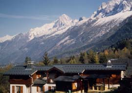

Gîte CIALC Don Bosco (1100 m)

Département, commune : Haute Savoie, commune de Les Houches
Cartes : AsF© 16 (case E29), IGN Top25 3531 ET pli C2
Situation : les Granges d’en haut. Adresse : 788 route des Granges, 74310 les Houches, 04 50 54 41 81, fax 04 50 54 42 34
Propriétaire : STPDM, 455 boulevard Michelet, 83056 Toulon cedex
Gardien : André Guebey
Ouverture et gardiennage : ouvert et gardé du 15/6 au 15/9, fermé hors cette période
Commodités : 80 places (chambres de 1 à 4 p, dortoirs : bat-flanc superposés avec matelas, draps, couvertures, oreiller, traversin),
restauration,
eau potable à l’intérieur.
Accès : en voiture, à 1,5 km au sud du centre ville des Houches
Itinéraires à proximité : TMB, TPMB, GR5
Randonnées à partir du refuge :
guide ou site AsF© : Brévent, Aiguillette des Houches, Mont Lachat
autres randonnées : col de Voza (TMB)
Photo : André Guebey.